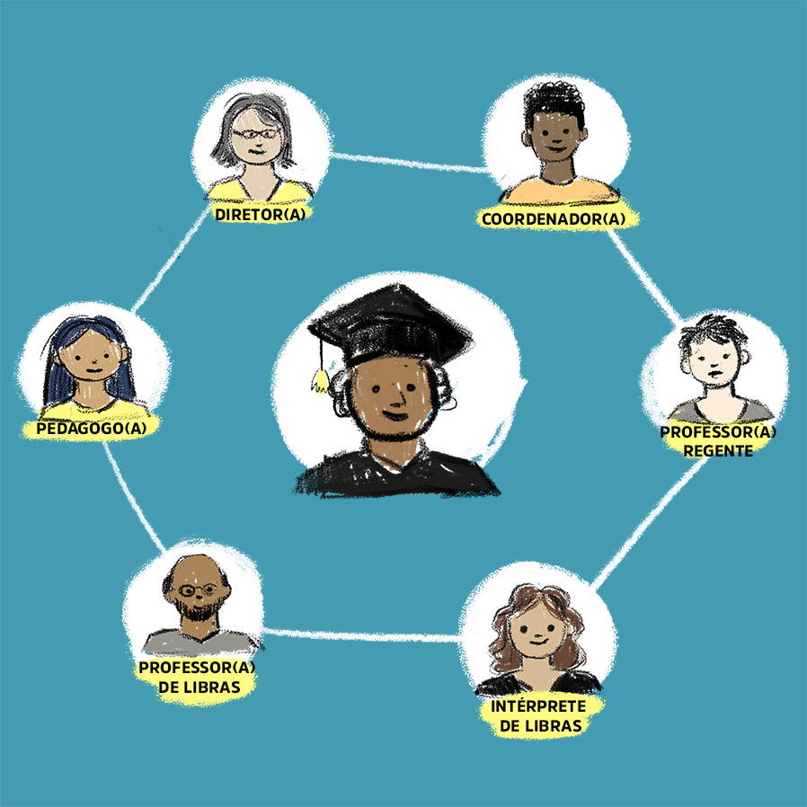

Estratégias para a acessibilidade linguística de alunos surdos na EPT
INTRODUÇÃO
Até aqui compreendemos que a Libras é uma língua reconhecida no país e possui sua própria estrutura gramatical, independente das línguas orais e é direto da comunidade surda que sua diferença linguística seja respeitada nos espaços que acessam.
Agora, iremos problematizar algumas possíveis práticas inclusivas. Importante enfatizar que para que as ações sejam realizadas é necessário análise da dinâmica escolar por todos os envolvidos no processo.
1 Introdução
![]()
Até aqui compreendemos que a Libras é uma língua reconhecida no país e possui sua própria estrutura gramatical, independente das línguas orais e é direto da comunidade surda que sua diferença linguística seja respeitada nos espaços que acessam.
Agora, iremos problematizar algumas possíveis práticas inclusivas. Importante enfatizar que, para que as ações sejam realizadas, é necessário análise da dinâmica escolar por todos os envolvidos no processo.

Fonte: Equipe DocentEPT
2 Iniciando a conversa
No livro anterior, identificamos que a legislação reconhece a profissão de tradutor e intérprete de libras-português (TILSP) como sendo o profissional que mediará a comunicação entre pessoas surdas e não surdas. Portanto, é compreensível que a chegada de ingressantes nos campi demanda da designação de tradutores para atendimento a essa necessidade. Será que apenas ter o intérprete no espaço escolar significa que a inclusão do aluno surdo seja efetivada?
Muitos poderiam dizer que sim, já que ele talvez seja o único na escola que saiba a Libras. Mas seria ele também professor do aluno? Dentro da sala de aula, a interação do aluno precisa se restringir apenas ao TILSP? Compreender essas questões favorece no desenvolvimento ou não de um trabalho colaborativo entre os envolvidos no processo.
Ainda outras perguntas: será que a organização da sala de aula interfere em como uma língua de modalidade visual-espacial como a Libras é utilizada e compreendida nesse espaço? Como a dinâmica de ensino em sala no uso do quadro (lousa) ou de qualquer outro recurso visual precisa levar em consideração as especificidades da língua de sinais e do processo de tradução?
Vamos conversar sobre esses pontos de modo que possamos pensar em possíveis práticas inclusivas na EPT que respeite a diferença linguística dos alunos surdos.
3 A diferença linguística e as práticas inclusivas
Chegou o aluno surdo à escola, e a Direção se organizou internamente para que profissionais tradutores e intérpretes atuem no curso. É muito comum identificarmos em algumas instituições a atuação de apenas um TILSP em sala de aula. Seria o suficiente?
O processo de interpretação demanda um esforço cognitivo ao transpor um texto oral, escrito ou sinalizado de uma língua para outra ou vice-versa. Esse fluxo, ao ser realizado por mais de 30 minutos por apenas um mesmo profissional, resulta em exaustão mental que gera prejuízos a qualidade da interpretação.
Essa análise é comprovada por pesquisas científicas e, por isso, a Federação Brasileira das Associações dos Profissionais Tradutores e Intérpretes e Guia-Intérpretes de Língua de Sinais – Febrapils, na nota Técnica 02/2017, diz que, ao ”sistematizar parâmetros e procedimentos adotados para a organização de equipes de trabalhos na realização de atividades de interpretação”, destaca a necessidade de revezamento entre profissionais tradutores na realização das suas atividades (FEBRAPILS, 2017).
Isso significa que a atuação em dupla ou em grupo, dependendo da atividade, é necessária, para que a qualidade da interpretação não seja prejudicada e isso ocasione prejuízos ao aluno. Esse é o primeiro ponto de destaque para as práticas inclusivas para atendimento ao aluno surdo na instituição: a presença do TILSP e em quantidade adequada.
Pronto, os TILSP chegaram e atuarão em dupla na sala de aula onde tem aluno surdo matriculado. Não temos mais o que nos preocupar, porque agora o aluno foi incluído. Será?
Compreendemos que o TILSP não é o professor do aluno. Portanto, se a metodologia de ensino não for preparada pensando em um aluno que utiliza a Libras como língua de conforto, provavelmente, mesmo com a interpretação, o conteúdo não será acessível para o aluno. Como assim? Vamos problematizar algumas situações para melhor compreender esse ponto?
Fonte: adaptado de Freepik/wayhomestudio
Vamos para a primeira situação: conteúdo em que a ênfase esteja no som das palavras. Imagine uma aula que trate do aparelho fonador. Mesmo que ocorra a interpretação, o conteúdo continuará abstrato para o aluno surdo, visto que a percepção auditiva dele não é a mesma de uma pessoa que é ouvinte. A interpretação estará presente, mas o que estamos destacando é que a abordagem do conteúdo, se não for adequada considerando a diferença linguística do aluno e a forma como ele interage com o som, não atingirá seu objetivo. Ao trazer essa situação, não queremos dizer que o aluno não precisa conhecer o conteúdo, e sim que é necessário pensar em possibilidades de tornar a abordagem do tema acessível.
A segunda situação são as falas muitas rápidas, principalmente de conceitos de uma área que talvez não tenha ainda sinais específicos na Libras e, com isso, torna-se necessário que o TILSP utilize de estratégias tradutórias para contextualizar esse conceito. Nesse processo, se a aula for muito rápida, passando de um conceito para o outro sem o uso do tempo de forma equilibrada, não será possível o aluno acompanhar adequadamente, já que ainda está recebendo a interpretação do primeiro conceito explicado pelo professor.
Importante considerar que, devido à estrutura de as línguas serem diferentes, Português e da Libras, o TILSP precisa primeiro compreender o que está sendo falado em uma língua para depois estruturar na outra. Esse processo leva um tempo que pode ser de segundos. Isso quer dizer que é provável ter um “atraso” (deley) de segundos entre o tempo de fala do professor e a conclusão da interpretação pelo TILSP. Portanto, equilibrar a velocidade da fala também é importante para o processo de mediação do conteúdo.
E o uso de material em mídia na aula; será que é necessário pensar sobre isso também. Claro! Vamos para a terceira situação. Vamos pensar que o professor escolheu um vídeo que contempla o que ele deseja sobre o conteúdo. Mas não tem legenda e a janela em Libras. O que acontecerá?
O TILSP poderá realizar a interpretação na hora da apresentação. Mas o aluno surdo, para acessar a interpretação, ficará com o olhar direcionado ao TILSP. Ou seja, o que está sendo apresentado no vídeo não é visualizado e percebido pelo aluno surdo da mesma forma que uma pessoa que não precisa da interpretação, e com isso “dividir” seu olhar. Sendo assim, se o vídeo apresenta elementos específicos de imagem, por exemplo, que o professor deseja destacar, precisa dar algumas pausas ou chamar atenção a esses elementos posteriormente. Lembre-se de que, por precisar da interpretação, o aluno, na maioria das vezes, “dividirá” seu olhar entre o TILSP e o professor/slides/quadro/vídeo.
E agora legenda ou janela em Libras? Para apresentação em vídeos na aula, é mais interessante que já esteja com a Janela em Libras. Ter apenas a legenda é o suficiente? Dependerá de como seu aluno se sentirá em ter acesso ao material apenas na segunda língua.
Permanecendo na compreensão de que o aluno surdo fixa mais tempo seu olhar no TILSP para acompanhar a interpretação, é significativo nos perguntar: como ele faz os registros no caderno do que o professor escreve no quadro (lousa)?
Essa é a quarta situação. Ou o aluno olha para o intérprete durante a aula ou ele faz suas anotações no seu caderno. As duas coisas, ao mesmo tempo, o farão perder o que está sendo falado e interpretado. Sendo assim, uma opção é após a explanação do professor, que ao mesmo tempo usa o quadro (lousa), dar uma pausa na fala, para que o aluno tenha tempo de fazer seus registros.
E, se todos falassem ao mesmo tempo, seria possível interpretar? Provavelmente, não. Imagine que o professor realizará uma dinâmica com participação da turma que responderá a suas perguntas, e os alunos falam ao mesmo tempo. Isso atrapalhará a compreensão do TILSP que, além de não conseguir compreender o que está sendo falado, não identificará na sua interpretação quem está expondo algo. O interessante é que, ao fazer essas dinâmicas, o professor organize para que as falas sejam organizadas em sequência. Claro que também é importante lembrar que o aluno surdo poderá responder e participar dessa dinâmica.
Na organização dos lugares em sala de aula, conhecemos como sendo o professor na frente e depois as cadeiras/mesas dos alunos. No caso de ter mais um profissional na sala, agora o TILSP, onde ele fica? Para pensar nessa resposta, é importante lembrar-se do aluno que usa Libras. Onde ele ficará? Assim como todos os demais colegas dele, esse aluno sentará onde ele desejar. Mas é importante pensar em algumas questões. Vamos para a quinta situação.
O importante a considerar nessa organização é onde o TILSP ficará, para que o aluno tenha acesso visual ao que o professor mostra, como o quadro (lousa), vídeos e ao mesmo tempo a interpretação. Por isso, uma possibilidade seria o TILSP ficar mais próximo do professor e dos recursos visuais. Assim, se o aluno escolher ficar na frente, no meio ou no final da sala, visualizará todas as informações visuais de forma mais adequada. Muito importante que esse alinhamento seja feito entre professor, TILSP e turma, para que todos compreendam o motivo dessa organização e valorizem essa dinâmica nas aulas.

Fonte: Veja/Eduardo Marques/Tempo Editorial/Divulgação
Disponível em: https://veja.abril.com.br/revista-veja/ouca-todos-os-surdos/
Ah, mas tem um ponto muito importante. Vamos para a sexta situação. Passar na frente do intérprete ou do aluno enquanto eles estão sinalizando é algo muito desconfortável. Por quê? Seria o mesmo que uma pessoa interromper seu raciocínio o tempo todo no momento da sua fala. Isso é desconfortável, não é mesmo? E quando você está falando e a pessoa não espera você terminar seu turno e se enfia no meio e começa a falar junto com você? Super chato, não é mesmo?
Sendo assim, no momento da interpretação, é desconfortável passar na frente, porque atrapalha a mensagem que chegará ao aluno, visto que perderá algumas informações quando o intérprete fica “invisível” para ele. Sua linha de raciocínio foi quebrada, provavelmente. Isso também se aplica quando o aluno sinaliza para o TILSP interpretar para o português oral. Qual a melhor estratégia para lidar com isso?
Que o professor, TILS, aluno surdo e alunos ouvintes alinhem onde os que utilizam a Libras ficarão e após isso definirem os espaços de circulação de pessoas na sala que não atrapalhe essa dinâmica de visualização da língua de sinais. Isso parece ser simples, mas imagina durante uma aula inteira essas interferências surgindo.

Fonte: Marcelo Soares/Folha Imagem.
Disponível em: https://www1.folha.uol.com.br/folha/sinapse/ult1063u902.shtml
Agora pensando na realização de trabalhos em grupos em uma turma com pessoas usuárias da libras e da língua portuguesa? Vamos para a sétima situação? Como sabemos, as atividades em grupo possibilitam uma troca entre os colegas e contribui para avaliar como eles se organizam para atingir um objetivo na disciplina. Esses momentos são ótimos, concordam? Talvez pareça ser mais fácil colocar as pessoas surdas em um mesmo grupo sempre justificando que eles se comunicariam melhor já que utilizam a libras. Mas, e a possibilidade de troca entre surdos e não-surdos? E, se for apenas um aluno surdo na sala, ele faria o “grupo” com o intérprete?
Importante pensar que, se as experiências de interação, que deveriam circular entre todos os alunos, não chegam até o aluno com a diferença linguística, então talvez a gente esteja o excluindo da dinâmica da turma. Portanto, atenção nas divisões dos grupos de sala, para que essa interação não se restrinja a apenas alguns alunos.
Se o aluno surdo for realizar um trabalho em grupo com os não-surdos, uma possibilidade é dialogar antes em como a mediação do intérprete entra nesse processo. Além disso, esse contato com os outros pode fortalecer a vontade do aluno surdo de ensinar para os colegas um pouco língua de sinais e dos colegas em aprender. Essa interação contribui para aumentar a comunicação direta entre eles não dependendo tanto da mediação do intérprete em momentos específicos.
Diante dessas situações, podemos concluir que apenas ter TILSP em sala não significa que seu processo de ensino contemple todas as questões necessárias para a acessibilidade linguística do aluno surdo. O professor pode até preparar uma aula excelente com o conteúdo bem trabalhado. Mas, se a dinâmica da sala, o compartilhamento antecipado do plano com o intérprete ou uso de recursos acessíveis não forem contemplados, sua aula não chegará acessível ao aluno usuário da libras.
Portanto, podemos concluir que apenas ter TILSP em sala de aula não é o suficiente, para que as práticas de inclusão aconteçam de forma imediata. Talvez o professor diga “mas eu não sei de forma aprofundada esses pontos, como conduzir isso tudo se ainda não sou especialista na área”? Uma possibilidade é a realização do trabalho colaborativo. Vamos conversar sobre isso no próximo tópico.
4 Práticas Pedagógicas e o Trabalho Colaborativo
A chegada de aluno surdo na turma possibilita que mais um profissional atue em sala junto ao professor. O TILSP depende do professor, visto que precisa compreender toda sua fala para realizar sua interpretação com qualidade e o professor depende do TILSP para que seu processo de ensino chegue até o aluno. Se um depende do outro para realizar um bom trabalho, o trabalho colaborativo é um excelente encaminhamento.
Mattos e Vieira-Machado (2018) mostram a importância do pensar coletivo, no sentido da potência do encontro.
A multiplicidade e as singularidades não cabem em determinações e espaços estanques, fechados, sem mobilidade, sem flexibilidade. Enquanto para uns é isso, para outros é aquilo, e juntos todos se complementam. Surge, então, o encontro, aquilo que perpassa, que entrecruza e, assim, com liberdade, vai criando novos e sucessivos encontros únicos, inusitados, inesperados (MATTOS; VIEIRA-MACHADO, 2018, p. 33).
A formação do professor e do TILSP é diferente, mas isso não significa a impossibilidade de existir uma troca onde um completa no outro o que lhe falta e vice-versa. Nesse encontro, esses dois profissionais podem criar juntos outras possibilidades flexíveis, para que o aluno tenha acesso a um ensino que o contemple. Ao compreender a importância do TILSP nesse espaço, podemos citar a importância de acesso antecipado do plano de aula por ele. Qual a importância desse compartilhamento?
Esses dois agentes, professor regente e intérprete educacional, vão construindo uma prática, inferindo, na dinâmica de inclusão escolar, uma solidariedade orgânica, ao compartilhar o planejamento, a mútua formação em serviço; os profissionais ressignificam valores e ações conforme seus próprios referenciais (ALBRES, 2015. p.32).
Enquanto um é especialista na área da Libras e Tradução, o outro é especialista na disciplina e conteúdo que trabalhará no curso. A troca de conhecimentos e o diálogo para o planejamento mútuo favorecerão muito aos dois profissionais.
Sendo assim, é positivo quando o conteúdo que será trabalhado chegue ao TILSP antes da aula, por meio de um plano compartilhado pelo professor. Desta forma, o TILSP terá a oportunidade de se familiarizar com os conceitos e, com isso, realizar seu plano de interpretação e apropriação da matéria. Sendo especialista na área da libras e conhecendo as questões que envolve a surdez, o TILSP poderá dialogar estratégias no plano que favoreça o conteúdo, mas também a diferença linguística do aluno.
Caso essa colaboração não aconteça, o aluno e o TILSP terão o primeiro acesso ao assunto na aula e, com isso, dúvidas de compreensão precisarão ser esclarecidas quando já deveria ocorrer a mediação e isso tornará o processo de interpretação com mais riscos de chegar ao aluno, de forma a não favorecer sua compreensão ou precisar de mais tempo para a interpretação. As situações citadas no tópico anterior e outras também podem ser pontos de pauta nesse planejamento colaborativo. Sobre a cooperação, Sennett (2013) considera que
A cooperação azeita a máquina de concretização das coisas, e a partilha é capaz de compensar aquilo que acaso nos falte individualmente. A cooperação está embutida em nossos genes, mas não pode ficar presa a comportamentos rotineiros; precisa desenvolver-se e ser aprofundada. O que aplica particularmente quando lidamos com pessoas diferentes de nós; com elas a cooperação torna-se um grande esforço. (SENNETT, 2013, p. 9).
A cooperação entre o professor e o intérprete possibilita uma dinâmica que pode compensar o que falta em um, e não no outro. Esse ato de partilhar e cooperar precisa ser desenvolvido e aprofundado, para que “comportamentos rotineiros” de distanciamento entre a prática desses dois profissionais não causem prejuízos para a atividade nem de um nem do outro, e, consequentemente, no processo de ensino-aprendizagem do aluno surdo (NOGUEIRA, 2018, p. 40).
Compreendemos que o trabalho colaborativo, como algo potente no espaço escolar, pode acontecer entre: professor e intérprete, a partir desse planejamento e diálogo importante; entre o corpo de professores na colaboração mútua para pensarem e dialogarem sobre as práticas de ensino acessíveis ao aluno surdo; entre os intérpretes e a turma para alinhamento de como a mediação e interação ocorrerá tendo a Libras presente no espaço; e entre os alunos não-surdos (ouvintes) com o aluno surdo, de modo que o relacionamento entre eles favoreça o respeito as diferenças linguísticas dos colegas.
Portanto, compreendemos que ninguém precisa trabalhar sozinho, mesmo que não seja especialista de uma área. É no coletivo que as situações e desafios poderão ser pensadas e juntos tornar possível o desenvolvimento de práticas de inclusão na EPT.
Nosso objetivo neste livro não é de criar “receitas” de como desenvolver o trabalho na escola, mas que, ao problematizar as situações citadas aqui, outras poderão ser também pensadas, dialogadas e organizadas, para que as práticas de acessibilidade linguística levem em consideração as especificidades dos alunos e do ambiente em que estão. Para maior aprofundamento do tema, sugerimos a leitura dos artigos listados abaixo sobre algumas práticas de inclusão de alunos surdos na ETP.
O artigo A Importância da Aula Experimental no Processo de Ensino-Aprendizagem para Alunos Surdos: Um relato de experiência na Educação Profissional e Tecnológica (EPT) apresentará uma estratégia que contemple a experiência visual durante o ensino que favorece a criação de referentes para alunos surdos.
O artigo A inclusão de surdos na educação profissional e tecnológica: glossário em libras para a área da construção civil apresenta o glossário em Libras de termos específicos como uma ótima estratégia nas disciplinas de cursos técnicos.
A Formação Profissional Integrada ao Ensino Médio: um estudo de caso com estudante surdo é o tema desse artigo que considera a importância da elaboração de um produto educacional com atividades de ensino que favoreça as especificidades do aluno surdo.
Indicamos como leitura também duas Instruções Normativas do IFES que apresentam várias estratégias possíveis no atendimento ao aluno usuários da língua de sinais.
A Instrução Normativa do Ifes 01/2020, nos Artigos 11, 12 e 13 orienta sobre os princípios e os procedimentos operacionais de acessibilidade para elaboração de materiais e tarefas didático-pedagógicas na Educação a Distância, nas atividades pedagógicas não presenciais e no ensino híbrido para surdos.
Em relação à oferta do Ensino Flexível, é a Instrução Normativa 04/2021 que orienta no que se refere aos procedimentos operacionais de acessibilidade.
5 Conclusão
Não pretendemos listar todas as possibilidades de estratégias que seriam possíveis em sala de aula para a inclusão de alunos surdos na EPT. Cada experiência é única. Sendo assim, analise como seria se um tivesse um aluno surda na sua disciplina/curso e avalie quais estratégias que favoreceriam a experiência visual, a libras e a língua portuguesa como segunda língua.
O que torna o processo satisfatório é como enxergamos o aluno com sua diferença linguística e, como isso, nos mobiliza a pensar e problematizar possibilidades no coletivo, reconhecendo as potências do aluno e favorecer, por meio das estratégias especificas em uma disciplina ou atividade, o seu desenvolvimento escolar.
6 Referências
![]()
ALBRES, Neiva de Aquino. Intérprete educacional: políticas e práticas em sala de aula inclusiva. São Paulo: Harmonia, 2015.
DA SILVA, Marimar; HAGAR, de Lara Tiburcio de Oliveira. Formação profissional integrada ao ensino médio: um estudo de caso com estudante surdo. Revista Educação Especial. 2020. Disponível em https://www.redalyc.org/articulo.oa?id=313162288002
INSTITUTO FERDERAL DO ESPÍRITO SANTO (IFES). Instrução Normativa nº 01/2020, de 25 de maio de 2020. Normatizar e orientar sobre os princípios e os procedimentos operacionais de acessibilidade para elaboração de materiais e tarefas didático-pedagógicas na Educação a Distância, nas atividades pedagógicas não presenciais e no ensino híbrido para discentes com Necessidades Educacionais Específicas no Ifes. Vitória, ES, maio de 2020. Disponível em https://proen.ifes.edu.br/images/stories/INSTRU%C3%87%C3%83O_NORMATIVA_N_01-2020_DE_25_DE_MAIO_DE_2020.pdf
INSTITUTO FERDERAL DO ESPÍRITO SANTO (IFES). Instrução Normativa nº Nº 4, DE 22 DE JULHO DE 2021. Normatizar e orientar no que se refere aos procedimentos operacionais de acessibilidade visando garantir a participação dos discentes com Necessidades Específicas em relação à oferta do Ensino Flexível Ifes. Vitória, ES, julho de 2021. Disponível em
MATTOS, L, C; VIEIRA-MACHADO, L. M. da C. Pensar as práticas pedagógicas bilíngues na educação de surdos na contemporaneidade. In: VIREIRA-MACHADO, L. M. da COSTA JÚNIOR, E. R. da (Org.). Educação de surdos: Políticas, práticas e outras abordagens. Curitiba: Appris, 2018, pp. 19-36.
NOGUEIRA, Fernanda dos Santos. Intérprete educacional cosmopolita: práticas heterotópicas na relação com a comunidade surda. Dissertação de Mestrado. Universidade Federal do Espírito Santo (UFES). Vitória. 2018
PEROVANO, Laís Perpetuo. Práticas inclusivas no ensino técnico. Campos dos Goytacazes, RJ. Brasil Multicultural, 2019.
PINTO, Maria Angélica Vieira; XAVIER, Glaucia do Carmo; SANTOS, Hadassa Rodrigues. A inclusão de surdos na educação profissional e tecnológica: glossário em libras para a área da construção civil. Revista Research, Society and Development. 2020. Disponível em https://rsdjournal.org/index.php/rsd/article/view/8777
ROFRIGUES, Rogério Pacheco; CORDEIRO, Suammy Priscila Rodrigues Leite; SARETTO, Tiago Machado. A Importância da Aula Experimental no Processo de Ensino-Aprendizagem para Alunos Surdos: Um relato de experiência na Educação Profissional e Tecnológica (EPT). Revista Research, Society and Development. 2020. Disponível em https://rsdjournal.org/index.php/rsd/article/view/3068
SENNETT, Richard. Juntos: os rituais, os prazeres e a política de cooperação. Rio de Janeiro: Record, 2013.

7 Ficha técnica
|
Título |
Estratégias para a acessibilidade linguística de alunos surdos na EPT |
|
Autoria |
Carla Rejane de Paula Barros Caetano (2021) / Fernanda dos Santos Nogueira (2021) |
|
Design gráfico |
Camila Karoline Justino Marques |
|
Design instrucional |
Michele Silva da Mata |
|
Revisão textual |
Cláuberson Correa Carvalho |

Este trabalho está licenciado com uma Licença Creative Commons - Atribuição-NãoComercial-CompartilhaIgual 4.0 Internacional.